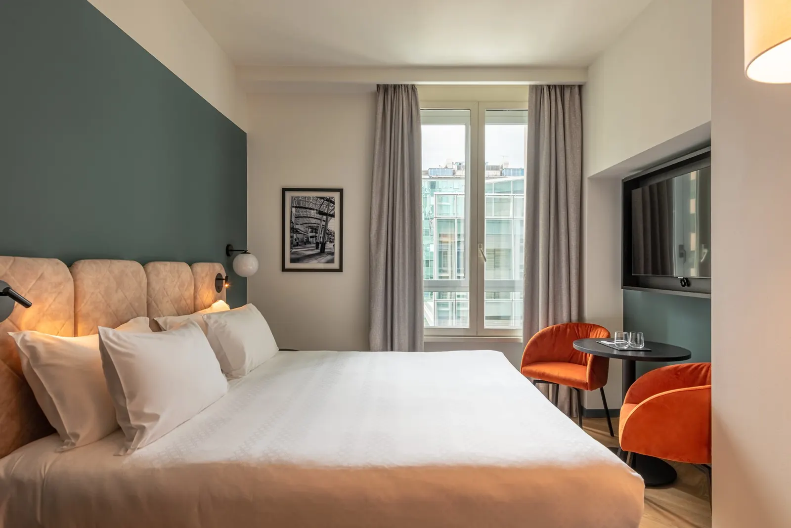
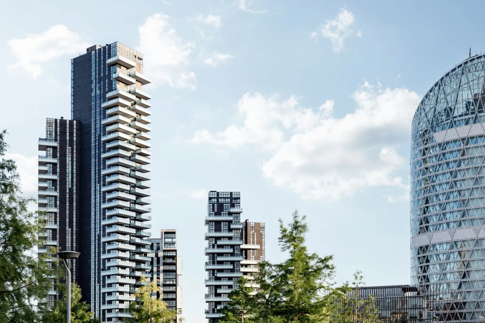
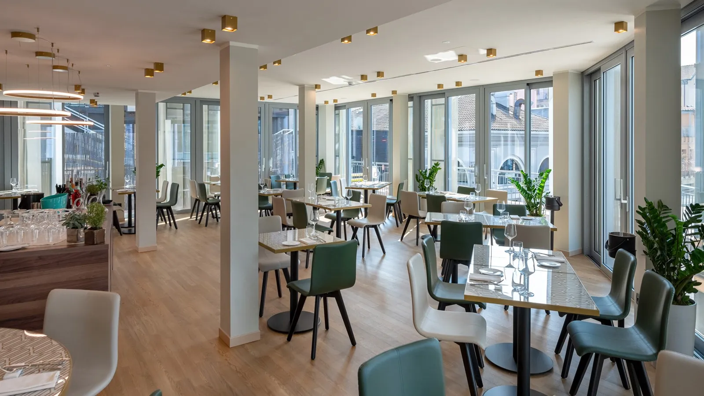
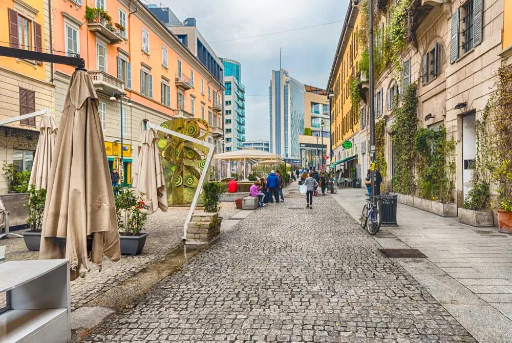
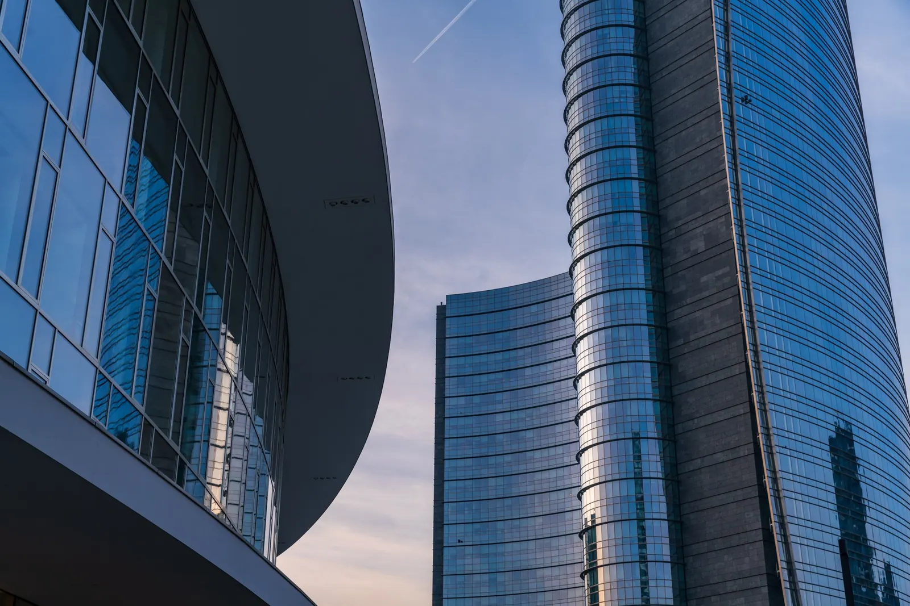
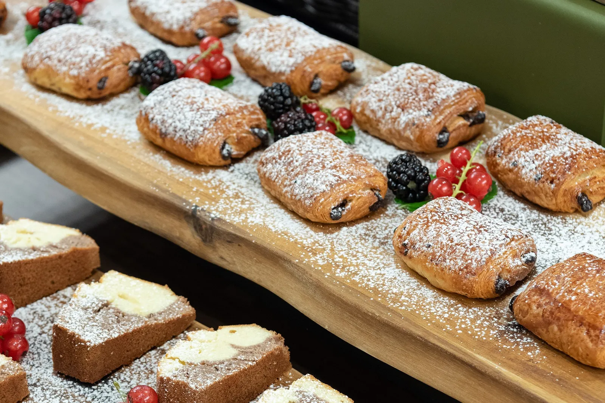
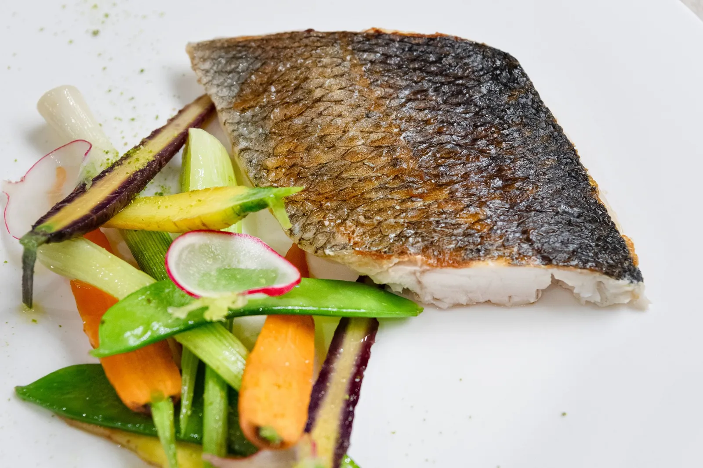
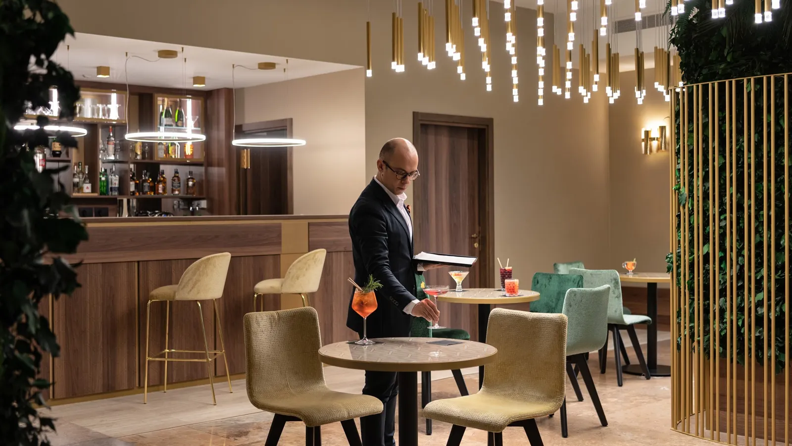

Tocq Hotel Milano · hotel 4 stelle a Porta Garibaldi
Scendi a Garibaldi.
Sei arrivato.
La metro a 3 minuti. La sala al piano. Il cuscino scelto prima di partire.
Porta Garibaldi · Porta Nuova
La tua base a Garibaldi.
Da qui lavori, incontri, mangi bene, fai shopping e raggiungi tutta Milano. Quasi sempre a piedi.

Lavorare
Accenture e Bending Spoons davanti all'hotel, UniCredit e Microsoft a 5 minuti.

Incontri di lavoro
Sei sale fino a 100 persone, sotto le camere. Dalla camera alla riunione.

Mangiare bene
Corso Garibaldi e l'Isola: trattorie, pizzerie, cocktail bar. Il tavolo lo prenotiamo noi.

Shopping
Corso Como a un minuto, Gae Aulenti a tre: moda, design, Eataly, Feltrinelli.
La metro a 3 minutiTutta Milano, dalla stazione Garibaldi
- Milano Centrale5 min
- Fiera Milano Rho25 min
- San Siro · stadio15 min
- Malpensa45 min
- Duomo15 min
- Autodromo di Monza30 min

Porta Nuova · a un minuto
Una finestra su Milano.
Le torri dalla camera, gli uffici a piedi.
Le camere
133 camere silenziose, rifatte nel 2021.

Prenota su tocq.it
Prenota qui, ricevi di più.
- Colazione inclusaBuffet o da asporto, in tutte le tariffe dirette.
- Cancellazione gratuitaFino a 24 ore prima dell'arrivo, con Direct Flex.
- Il cuscino già sul lettoQuello che hai scelto, prima di arrivare.
Meeting ed eventi
Dormi dove ti riunisci.
Sei sale fino a 100 persone, sotto le camere. Chi viene da fuori arriva a piedi dal treno.
All Day Eating
Colazione, pranzo, aperitivo, cena.
Colazione dalle 6:30 (da asporto dalle 5:30), cena al Clorofilla fino alle 23.



Recensioni
Cosa dicono gli ospiti.
"È sempre la mia scelta a Milano: il mio hotel preferito, lo staff è il migliore."
Ospite abituale · Booking
"I did email in advance to request a quiet room and it was super quiet, even with the window open."
TripAdvisor · 5★
Da confermareVoti all'ottobre 2026, da aggiornare al lancio. Per le recensioni dal vivo serve l'ID del widget Trustindex (HERO.md).
In breve
Perché scegliere il Tocq Hotel?
- La metro a 3 minutiM2 e M5 a Garibaldi, la stazione a 5 minuti con treni e Malpensa Express. Niente taxi.
- Camere silenziose133 camere insonorizzate, rifatte nel 2021. Il lato corte, se domani hai una riunione.
- Il cuscino lo scegli tuQuattro cuscini: trovi il tuo già sul letto.
- Le sale sotto le camereSei sale fino a 100 persone, nello stesso edificio.
- Colazione anche all'albaBuffet dalle 6:30, da asporto dalle 5:30. Halal, senza glutine e vegana.
- Qualcuno risponde sempreReception 24 ore su 24, con la guardia notturna all'ingresso.
Tutti i dati dell'hotel
- Categoria
- Hotel 4 stelle, riaperto nel 2021 dopo la ristrutturazione completa
- Indirizzo
- Via Alexis De Tocqueville 7/D, 20154 Milano
- Zona
- Porta Garibaldi, fra Porta Nuova e Corso Como
- Stazione
- Metro Garibaldi a 3 minuti a piedi, stazione Porta Garibaldi a 5: treni, passante, Malpensa Express
- Camere
- 133 insonorizzate: 14 Comfort, 63 Superior, 35 Executive, 21 Junior Suite
- Orari
- Check-in dalle 14:00, check-out fino alle 12:00; reception aperta 24 ore
- Sale meeting
- 6, da 20 a 100 persone a platea, nello stesso edificio delle camere
- Reception
- Aperta 24 ore, con guardia notturna
- Colazione
- A buffet, con opzioni halal, senza glutine e vegane; da asporto per chi parte presto
- Su richiesta
- Menu dei cuscini, camera sul lato corte, deposito bagagli
Il Duomo? 15 minuti di metro. Uffici, treni, ristoranti e negozi, a piedi.
Tocq Hotel Milano · Porta Garibaldi
La metro a 3 minuti. La sala al piano. Il cuscino già scelto.
Preferisci parlare con qualcuno? +39 02 62071, la reception risponde 24 ore su 24. · Domande frequenti